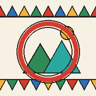

Sowra
صورة من بلدي · Saudi Arabia through local lenses
Wherever you travel across Saudi Arabia, local lenses will guide you — to a distant valley, a hard-to-reach viewpoint, or a beautiful corner you would never have found on your own.
Sowra is a Saudi platform where people document the country they know best. Every photo is pinned to its real location, rated by the community, and added to a living visual map of the Kingdom.
Why it's different
📍 Photos that know their placeEvery shot is a real point on the map — you can see exactly where it is and how to get there.
⭐ The crowd decidesThe best photos rise by community votes, not by follower counts or algorithms.
👣 Verified field visitsYou can only log a visit when you're physically at the location — no armchair claims.
🏆 Discovery questsSeasonal trails and weekly themes that get you out exploring, not scrolling.
For travellers and expats
You often reach places most people never see. Sowra is where those places get recorded — with their coordinates, their season, and the story of how you got there.
- Browse the interactive map before you travel
- See which regions are still undocumented — and be the first
- Log verified visits and earn discovery badges
- Record 30-second clips of what a place actually feels like
A note on language: the app interface and most content are currently in Arabic. Place names, coordinates and the map are universal — and an English interface is planned as our international community grows. If you'd like it sooner, let us know: open the app →
Messages (💬 in the bottom bar) → send us a note. Or email
sowraapp@gmail.com.
Open Sowra →
Install it as an app
🍎 iPhone / iPad
Open sowra.app in Safari → tap the Share button → Add to Home Screen
🤖 Android
Open sowra.app in Chrome → menu (⋮) → Install app